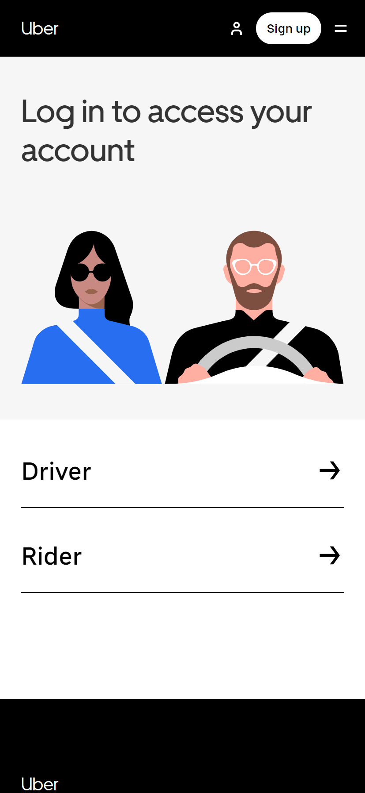
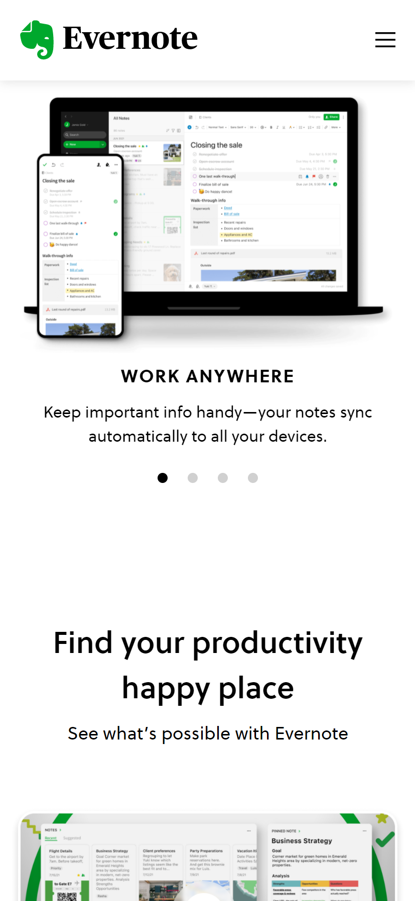
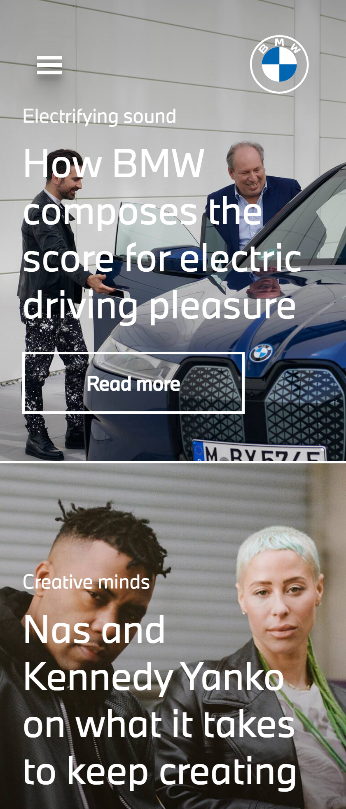

Roguin P. Espinal
Uber
Uber.com Repetition is achieved by repeating an element more than once throughout a design. While this may seem simple, designers depend on the principle of repetition to create a feeling of organized movement and consistency within a composition. In any design, you’ll find yourself having to repeat elements, but by doing so, you'll be able to strengthen and unify the visual appeal of a design.
Evernote
Evernote.com When designers move elements closer together or farther apart, they are employing the principle of proximity. There are two major reasons why a designer would employ proximity: to create connections or deploy them.
BMW
bmw.com People say that opposites attract and this can be true for elements of design as well. Imagine a composition without contrast –every color, font, shape, etc. would be the same size, and that design would be rather dull. Contrast is the tool that makes a design “pop,” making it memorable for viewers.